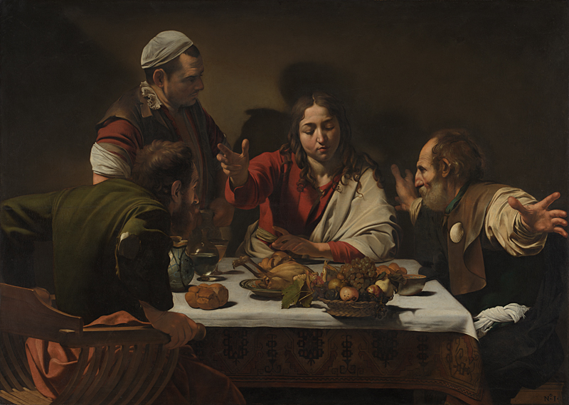

(from Italian word chiaro, “light” and scuro “dark”), this technique was used by artists (popularized by Leonardo Da Vinci but later mastered by Caravaggio and Rembrant) to create the illusion of three-dimensionality by using strong contrasts between light and the shadow. This allows artists to create a dramatic and compelling scene by only playing with light sources and shadows, rather than striking poses or themes.
